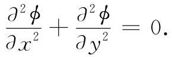

本章将继续讨论各种特殊情况下电场的特性。首先，要来描述一些求解导体问题的更精确的方法。并不期望读者对这些较高级的方法能够在这个时候就熟练掌握，虽然有些问题可能利用在较高级课程中学到的技巧就能解决，但从这类问题得到某种概念仍然可能是有意义的。然后，我们还将提出两个例子，其中电荷分布既非固定、也非由导体所携带，而是要由其他某种物理规律来确定的。
正如在第6章我们所发现的，当电荷分布已确定后，静电场问题基本上就很简单，只要求算出一个积分。然而，当有导体存在时，由于导体上的电荷分布原先不知道，复杂性便产生了. 电荷必须这样分布于导体表面上，使得该导体能成为一个等势体。对于这种问题的解法既非直接也不简单。
我们曾看到过一个解决这类问题的间接方法，在此方法中我们找到了关于某种特定的电荷分布的一些等势面，并用一个导电面去代替其中的一个。按这种办法我们就能制成一份关于球面、平面等形状导体的特殊解的目录。在第6章中所描述的有关镜像法的应用，就是间接法的一个例子，我们将在本章中描述另一个例子。
如果所要求解的问题并不属于能够用间接法构造解的那一类问题，则我们不得不采用较直接的方法来解决。直接方法的数学问题是在服从某些边界——各导体表面——上ϕ分别为一些恰当常数的条件下，求拉普拉斯方程
▽2 ϕ=0 （7.1）
的解。凡属牵涉到求解一个微分方程并受某些边界条件 所支配的问题，都叫作边值 问题。这种问题已成为很多数学研究的对象。在具有复杂形状的导体的情况下，并没有普遍的解析方法，甚至像一个带电的两端都封闭着的金属柱体罐——比如啤酒罐——这种简单的问题都会遇到可怕的数学困难，它只能用数值计算法近似地给予解决。唯一 普遍的求解方法就是数值计算法。
方程式（7.1）对于若干问题是可直接求解的。例如，具有旋转椭球面形状的带电导体问题，可以用已知的特殊函数严格解出。对于一个薄盘的解，可通过一个无限扁平的椭球来得出。同样，关于一根针的解，则可用一个无限长的椭球而获得。然而必须强调，唯一具有普遍适用性的直接方法乃是数值计算技术。
边值问题也可通过对一个物理类似体的测量来解决。拉普拉斯方程产生于许多不同的物理情况中：稳定热流、无旋液流、搀杂媒质中的电流以及弹性膜的挠曲。这些经常能够用来建立一个模拟所要求解的电学问题的物理模型。通过对在该模型上适当模拟量的测量，有关问题的解就可以确定了。模拟技术的一个例子是用电解槽来解二维的静电学问题，这个办法所以有效，乃是由于均匀导电媒质中势的微分方程与在真空中的相同。
有许多物理情况，在一个方向上物理场的变化为零，或者是与另外两个方向上的变化比较，这个变化可以忽略，这样的问题叫作二维问题，其场仅取决于两个坐标。例如，若沿z轴放置一根长直带电导线，则在离导线不太远处的一点，其电场只与x及y有关，而与z无关。这就是一个二维问题。由于在一个二维问题中∂/∂z=0，所以在自由空间里关于ϕ的方程为
 （7.2）
由于这个二维方程相对简单，所以就会有一个宽广的条件范围，在这范围内它可以解析地求解。事实上，一个强有力的间接数学技巧依赖于复变函数的一个数学定理。现在，我们就将予以描述。